Le guide complet pour la direction, le secrétariat et la comptabilité : de l'installation jusqu'au bulletin de fin d'année, pas à pas.
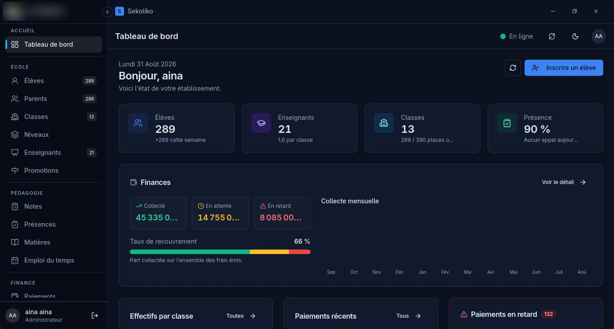
Ce manuel s'adresse aux personnes qui font vivre l'établissement au quotidien : direction, secrétariat, comptabilité. Aucune connaissance en informatique n'est nécessaire — chaque tâche est expliquée pas à pas, avec l'écran correspondant.
Chaque tâche est découpée en étapes courtes, à réaliser dans l'ordre.
Une étiquette comme École › Élèves indique où cliquer dans le menu de gauche.
« Astuce » pour gagner du temps, « Important » pour éviter une erreur, « Bon à savoir » pour comprendre.
Chaque écran important est montré tel qu'il apparaît dans le logiciel, avec une légende.
| Profil | Ce qu'il peut faire | Comment le compte est créé |
|---|---|---|
| Administrateur | Tout : élèves, pédagogie, finances, paramètres, utilisateurs, licence. | À la création de l'établissement, puis dans Paramètres › Utilisateurs |
| Secrétaire | La gestion quotidienne de l'établissement. | Paramètres › Utilisateurs |
| Enseignant | Sa fiche, ses classes, ses matières et son emploi du temps. | École › Enseignants |
| Parent | Est rattaché à ses enfants ; ses coordonnées servent au suivi. | École › Parents |
Sekoliko enregistre tout sur votre ordinateur d'abord. Une coupure d'Internet n'empêche jamais de travailler : les données partent vers le serveur et les autres postes dès que la connexion revient.
Un seul logiciel pour toute la vie de l'établissement.
Sekoliko réunit au même endroit tout ce qu'une école gère au quotidien : les élèves et leurs familles, les classes, les enseignants, l'emploi du temps, les présences, les notes et les bulletins, les écolages et les reçus. Il a été pensé pour les écoles de Madagascar : simple, rapide, et fiable même quand la connexion ne l'est pas.
Dossiers d'élèves, parents, classes, niveaux, passage de classe en fin d'année.
Matières et coefficients, emploi du temps, présences, notes, moyennes et bulletins.
Frais par niveau, encaissements (même partiels), reçus, suivi des retards de paiement.
Chaque ordinateur travaille seul et se synchronise avec les autres dès que le réseau revient.
Les exports reprennent les filtres de l'écran : pour imprimer la liste d'une seule classe, filtrez d'abord la liste des élèves sur cette classe, puis exportez.
Dix minutes, téléchargement compris. Puis le logiciel se met à jour tout seul.
| Système | Windows 10 ou Windows 11, en 64 ou 32 bits. |
| Mémoire | 4 Go minimum, 8 Go conseillés. |
| Disque | 1 Go libre, plus la place des photos et documents. |
| Internet | Nécessaire pour créer l'établissement et activer la licence, puis seulement pour synchroniser. |
Windows 7, 8 et 8.1 ne sont pas pris en charge : l'installateur le détecte et s'arrête avec un message, plutôt que d'installer un logiciel qui ne démarrerait pas.
Ne téléchargez Sekoliko que depuis le site officiel ou un lien envoyé par notre équipe.
Le site propose aussi une version portable : un seul fichier à lancer depuis une clé USB, sans installation. Elle dépanne sur un poste où l'on ne peut rien installer, mais elle ne se met pas à jour toute seule : préférez l'installateur pour un usage quotidien.
Quand il est connecté à Internet, Sekoliko vérifie de lui-même s'il existe une nouvelle version, au démarrage puis toutes les six heures.
Pour vérifier vous-même, ouvrez Paramètres › Configuration : la carte Mises à jour affiche la version installée et propose Vérifier maintenant.
À faire une seule fois, par la personne qui dirige l'établissement.
Au tout premier lancement, l'écran de connexion propose Nouvel établissement ? Créer un compte. Cette étape demande une connexion Internet.
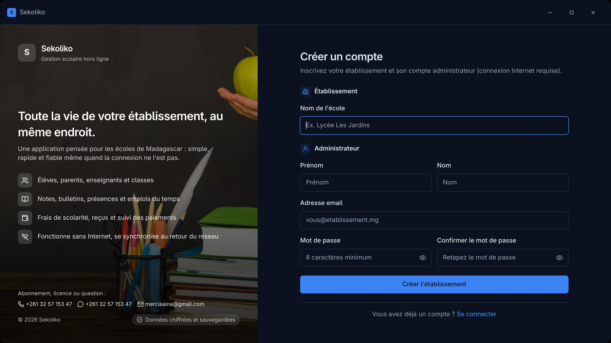
La création ouvre un essai gratuit de 14 jours, sans carte bancaire ni engagement, avec tous les modules, jusqu'à 200 élèves et 30 enseignants. Voir le chapitre 19 pour la licence.
Un ordinateur ne peut créer qu'un seul établissement, et une adresse e-mail ne sert qu'à un seul compte. Les autres membres de l'équipe ne créent pas de compte : l'administrateur leur en ouvre un (chapitre 17). Pour un second établissement, contactez-nous.
Un poste partagé entre plusieurs collègues, en toute sécurité.
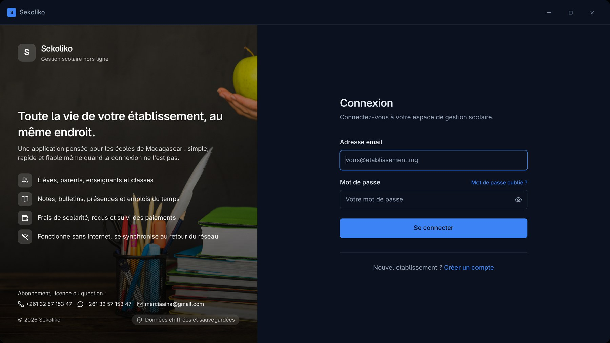
Mot de passe oublié ? Cliquez sur Mot de passe oublié ? et suivez les instructions reçues par e-mail. Si l'administration vous a remis un mot de passe provisoire, Sekoliko vous demande d'en choisir un nouveau dès la première connexion.
Le bouton de déconnexion, en bas du menu de gauche à côté de votre nom, verrouille le logiciel. Votre nom reste affiché ; il suffit de retaper votre mot de passe pour reprendre exactement là où vous en étiez — même sans Internet. Fermer puis rouvrir Sekoliko redemande aussi le mot de passe.
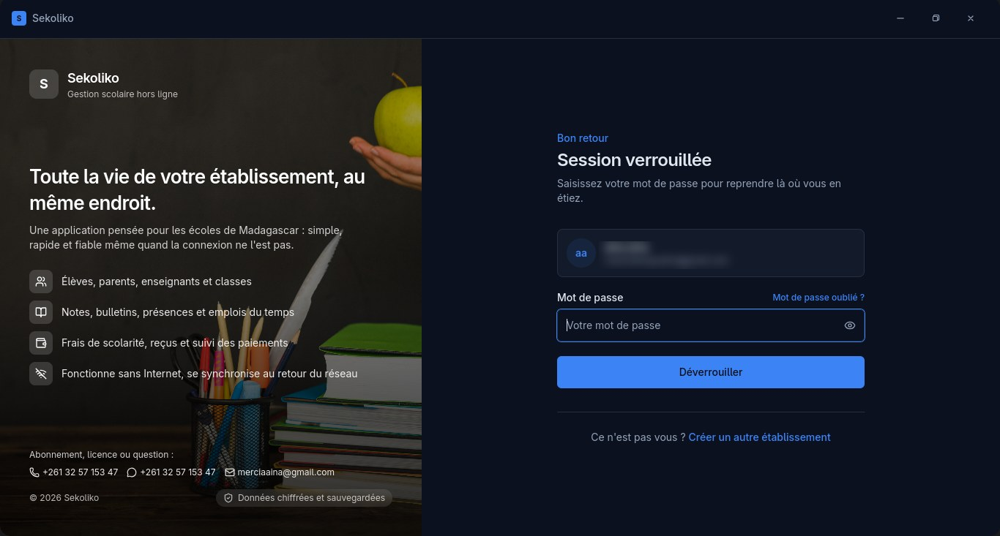
Sans Internet, un compte ne peut se connecter que s'il l'a déjà fait au moins une fois en ligne sur ce même ordinateur. Pensez-y avant une coupure prévue.
Trois étapes, à la première connexion d'un nouvel établissement.
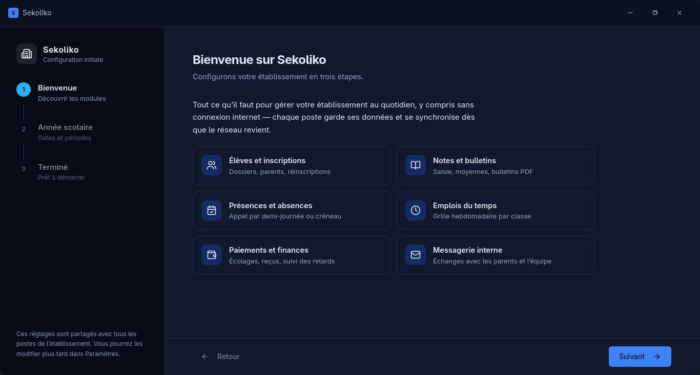
L'assistant n'apparaît qu'une fois par établissement. Tous ces choix restent modifiables ensuite dans Paramètres › Configuration.
Pour démarrer une année dans le bon ordre : créez les niveaux et les classes (chapitre 9), les matières (chapitre 11), les enseignants (chapitre 10), les frais par niveau (chapitre 16), puis inscrivez les élèves (chapitre 7).
Le menu à gauche, la barre du haut, et le tableau de bord.
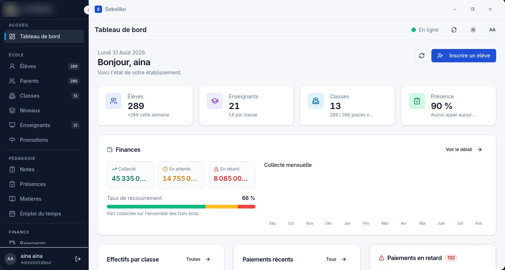
| Rubrique | Ce qu'elle contient |
|---|---|
| Accueil | Tableau de bord |
| École | Élèves, Parents, Classes, Niveaux, Enseignants, Promotions |
| Pédagogie | Notes, Présences, Matières, Emploi du temps |
| Finance | Paiements, Frais par niveau |
| Paramètres | Utilisateurs, Configuration, Licence, Synchronisation |
La petite flèche en haut du menu le réduit à une colonne d'icônes, pour gagner de la place. Les pastilles grises indiquent le nombre d'élèves, de parents, de classes et d'enseignants.
Il résume l'établissement en un coup d'œil : nombre d'élèves, d'enseignants et de classes, taux de présence du jour, puis les finances — montants collectés, en attente et en retard, taux de recouvrement et collecte mois par mois. Plus bas : effectifs par classe, paiements récents et paiements en retard. Le bouton Inscrire un élève ouvre directement le formulaire d'inscription.
École › Élèves
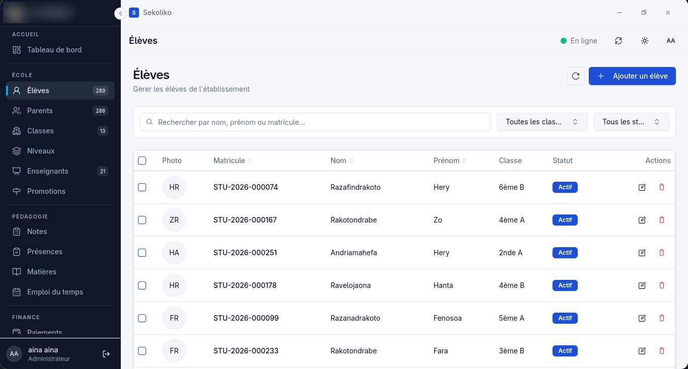
Tapez un nom, un prénom ou un matricule dans la barre de recherche. Les deux listes à droite filtrent par classe et par statut (actif, inactif, diplômé, suspendu). Un clic sur le titre d'une colonne trie la liste.
Le matricule est attribué automatiquement (par exemple STU-2026-000074) : vous n'avez rien à inventer.
Cliquez sur une ligne pour ouvrir la fiche. Ses onglets rassemblent tout : informations, notes, présences, paiements — où vous pouvez encaisser directement — et documents. Le bouton Exporter la fiche la produit en PDF ou Word.
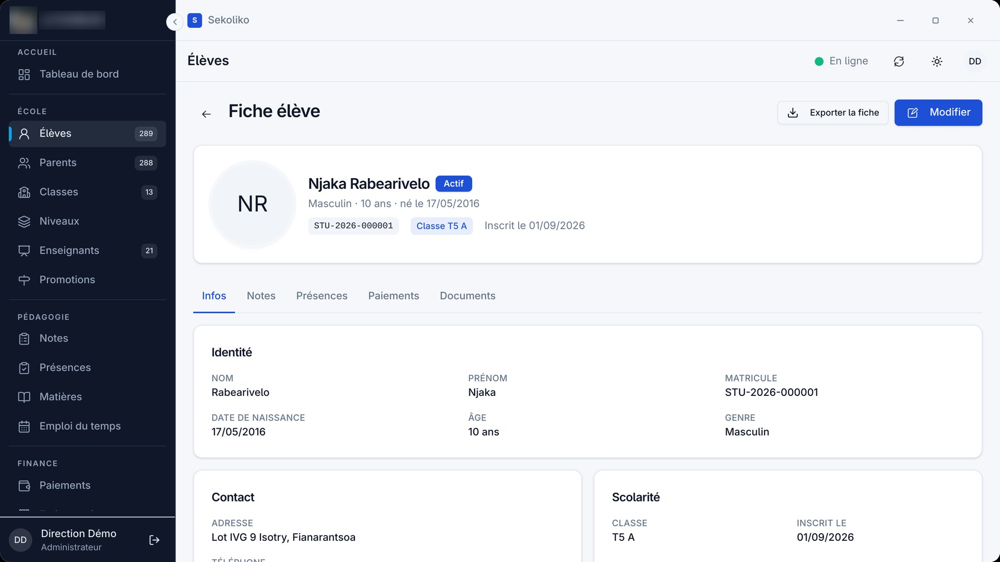
École › Parents
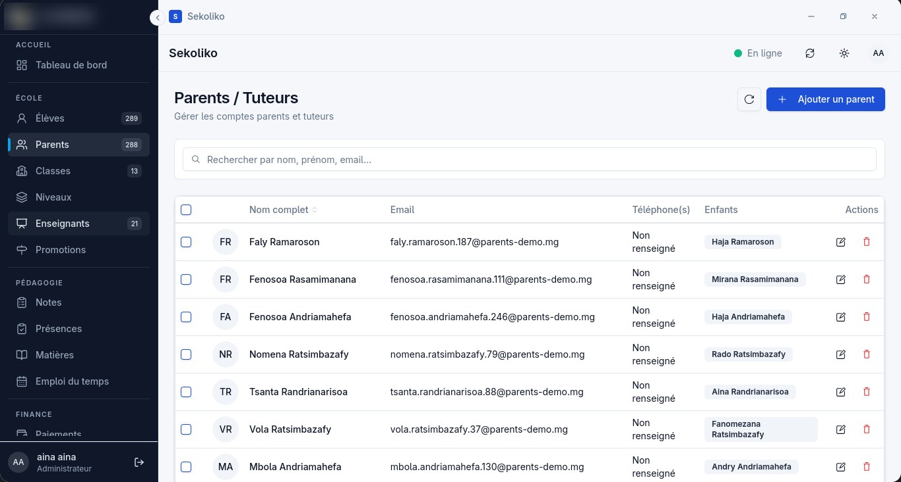
Chaque parent ou tuteur a une fiche, reliée à un ou plusieurs enfants. Depuis la fiche d'un parent, on voit toute la fratrie ; depuis la fiche d'un élève, on retrouve les personnes à contacter.
Un clic sur le nom d'un enfant, dans la colonne Enfants, ouvre directement sa fiche. La liste des parents s'exporte aussi en PDF, Word ou Excel.
École › Niveaux puis École › Classes
Les niveaux (T1, 6ème, Terminale…) sont la référence de tout le logiciel : classes, matières et frais s'y rattachent. Sur un établissement neuf, le bouton Créer les niveaux standards (Madagascar) remplit en un clic toute la nomenclature, de T1 à la Terminale, avec le passage automatique d'un niveau au suivant. Vous pouvez ensuite en ajouter ou en modifier.
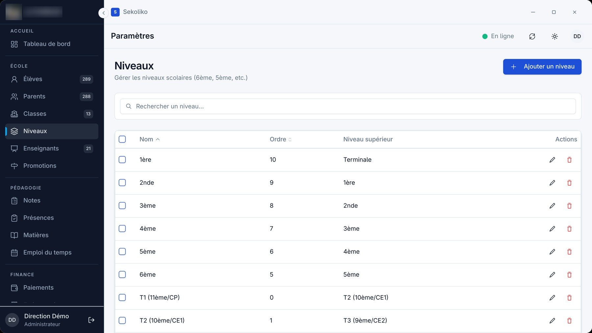
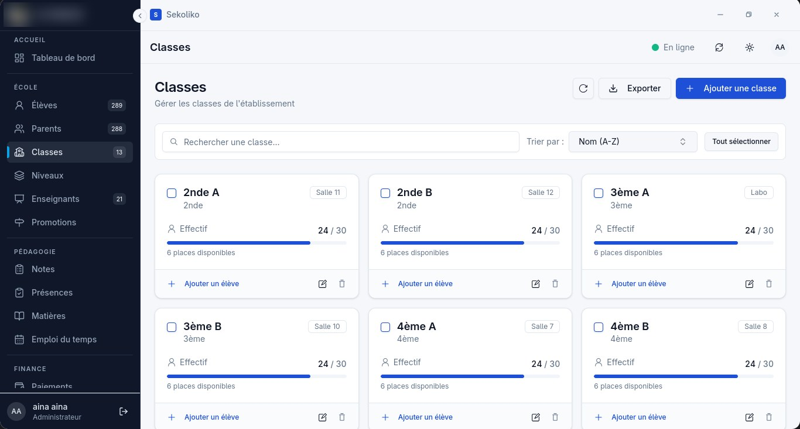
Ouvrez une classe pour voir ses élèves, ses matières, ses enseignants et son emploi du temps. C'est aussi d'ici que l'on exporte la liste de la classe et que l'on produit les bulletins (chapitre 14).
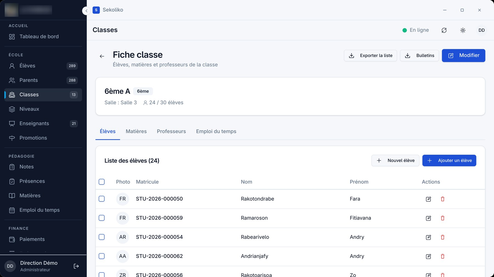
École › Enseignants
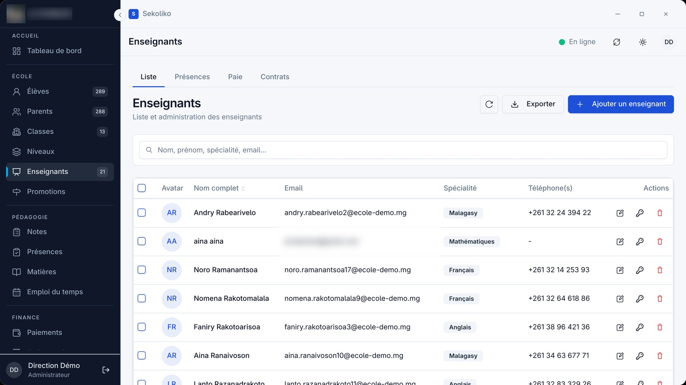
L'e-mail de l'enseignant devient son identifiant de connexion. Sans mot de passe saisi, un mot de passe provisoire est généré et lui est communiqué ; il le changera à sa première connexion.
Les onglets de la rubrique suivent aussi la présence des enseignants, leur paie (horaire, mensuelle ou forfaitaire) et leurs contrats, avec les numéros CNaPS et OSTIE exigés pour un contrat de travail à Madagascar.
Pédagogie › Matières
Chaque matière a un nom, un code court (MATH, FR, MLG…), un niveau et un coefficient. Le coefficient pèse dans le calcul des moyennes et des bulletins.
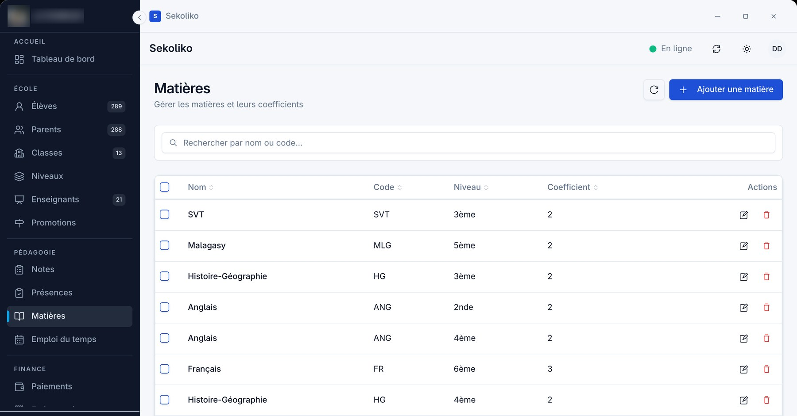
Le coefficient se règle uniquement ici. Modifiez-le avant la saisie des notes : il s'applique à toutes les moyennes de la matière.
Pédagogie › Emploi du temps
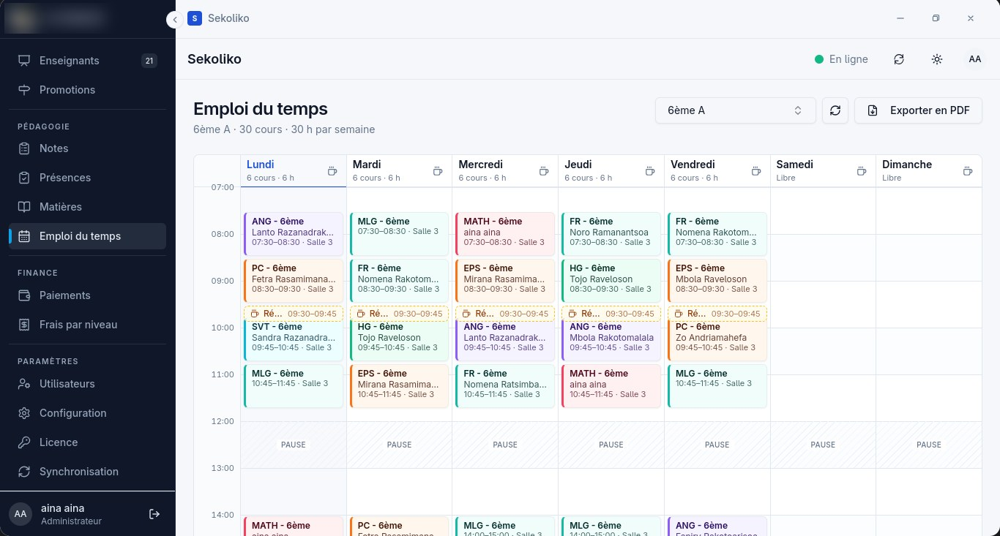
En haut de chaque jour : le nombre de cours et d'heures. Le bouton Exporter en PDF produit la grille, prête à afficher dans la classe.
Pédagogie › Présences
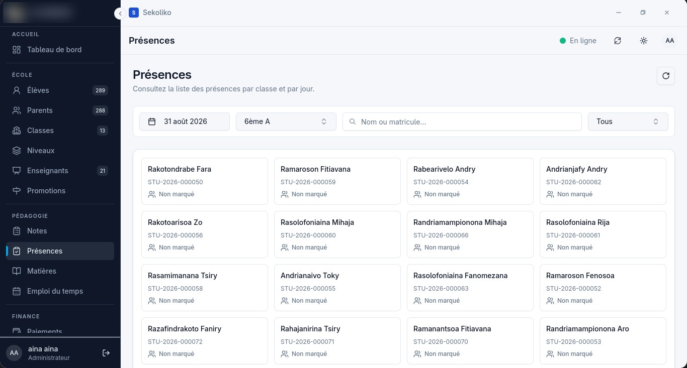
Choisissez une date et une classe : chaque élève apparaît avec son statut du jour. La recherche retrouve un élève par nom ou matricule ; la liste de droite ne montre qu'un statut à la fois.
| Statut | Signification |
|---|---|
| Présent | L'élève était en classe. |
| Absent | L'élève n'est pas venu. |
| Retard | L'élève est arrivé après le début du cours. |
| Excusé | Absence justifiée. |
Filtrez sur Absent pour obtenir d'un coup la liste des élèves à signaler aux familles.
Pédagogie › Notes
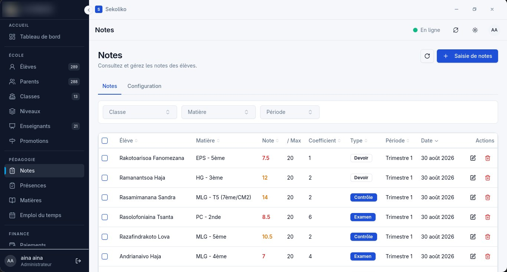
L'onglet Notes liste toutes les notes, filtrables par classe, matière et période. Une note en rouge est sous la moyenne, en orange tout juste au-dessus.
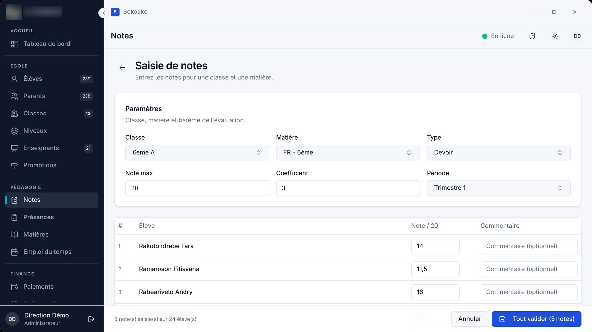
L'onglet Configuration choisit les types d'évaluation qui comptent dans la moyenne générale. Les examens blancs peuvent être mis à part, hors moyenne. On y fixe aussi les seuils de passage utilisés en fin d'année (chapitre 15).
Chaque bulletin présente la moyenne générale, pondérée par les coefficients, et le rang de l'élève dans sa classe (par exemple 5/32). Un élève sans aucune note n'est pas classé.
École › Promotions — en fin d'année scolaire
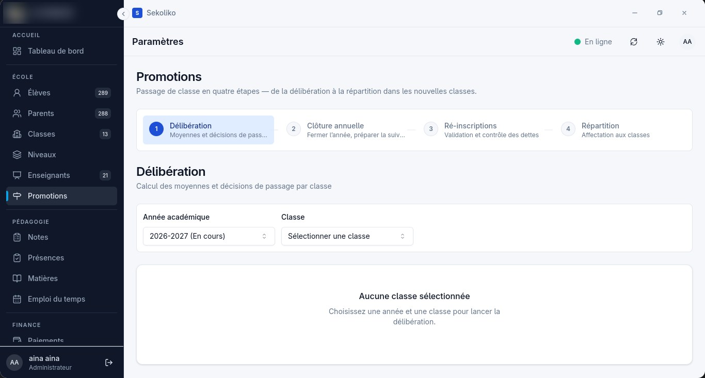
Le passage d'une année à l'autre est guidé en quatre étapes, à faire dans l'ordre :
| Moyenne annuelle | Décision proposée |
|---|---|
| 10 ou plus | Admis |
| de 9,50 à 9,99 | À délibérer |
| moins de 9,50 | Redoublant |
Ces seuils se règlent dans l'onglet Configuration des Notes. Vérifiez-les avant la délibération.
Finance › Frais par niveau et Finance › Paiements
Commencez par les frais de chaque niveau : droits d'inscription, écolage mensuel, frais annuels. Chaque frais a un montant en Ariary et peut être désactivé sans être supprimé.
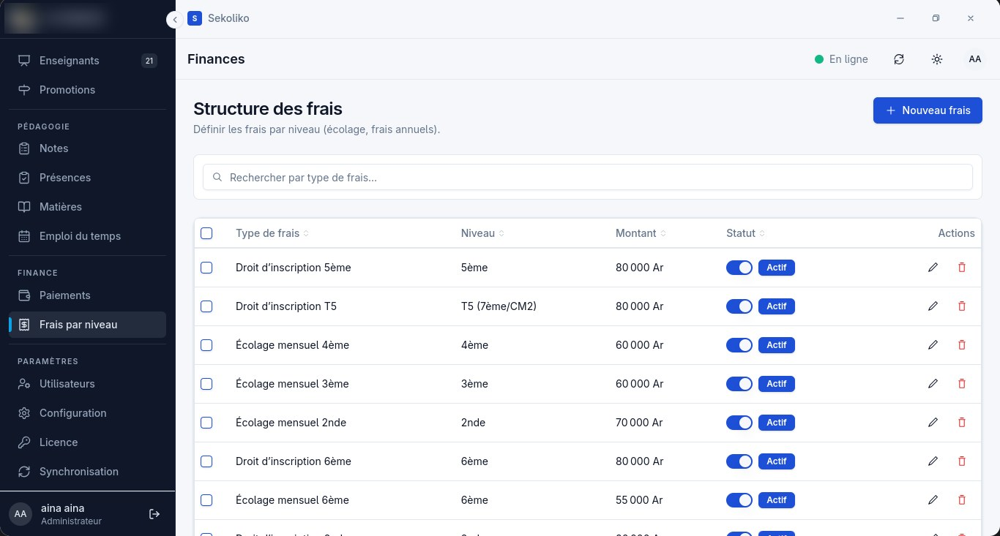
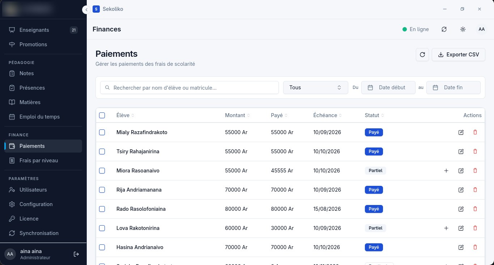
La liste regroupe tous les paiements. Filtrez par statut ou par période ; le bouton + d'un paiement Partiel enregistre le complément. Les impayés apparaissent aussi sur le tableau de bord, dans Paiements en retard.
Paramètres › Configuration et Paramètres › Utilisateurs
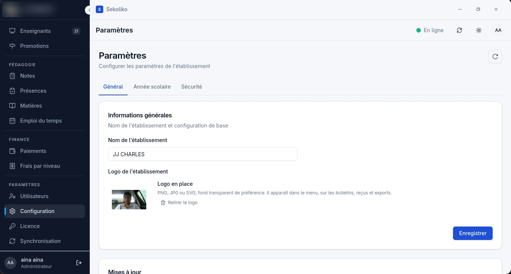
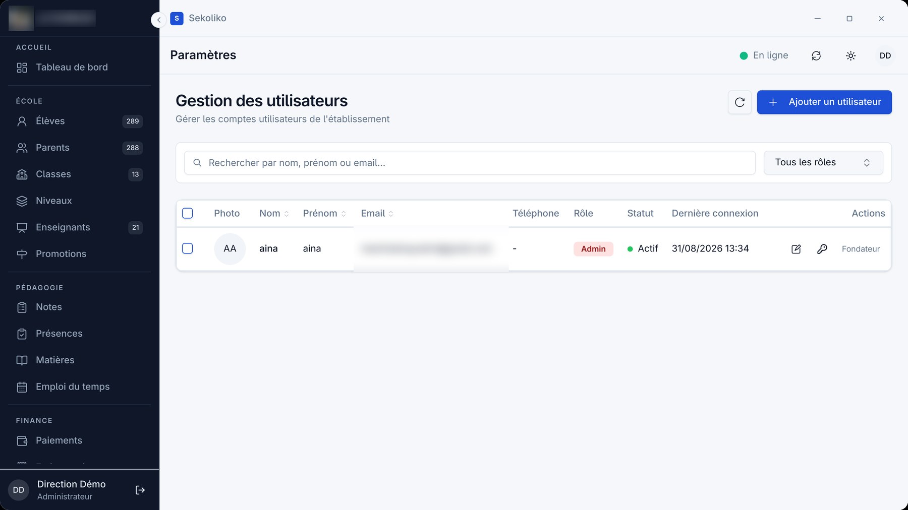
Les comptes enseignant se créent dans École › Enseignants et les fiches parent dans École › Parents.
La coupure de réseau n'arrête plus le travail.
Toutes vos saisies sont enregistrées sur ce poste d'abord. Sans Internet, vous continuez à inscrire, encaisser, saisir des notes et imprimer. Dès que la connexion revient, les changements partent vers le serveur et ceux des autres postes arrivent, en continu, sans que vous ayez rien à faire.
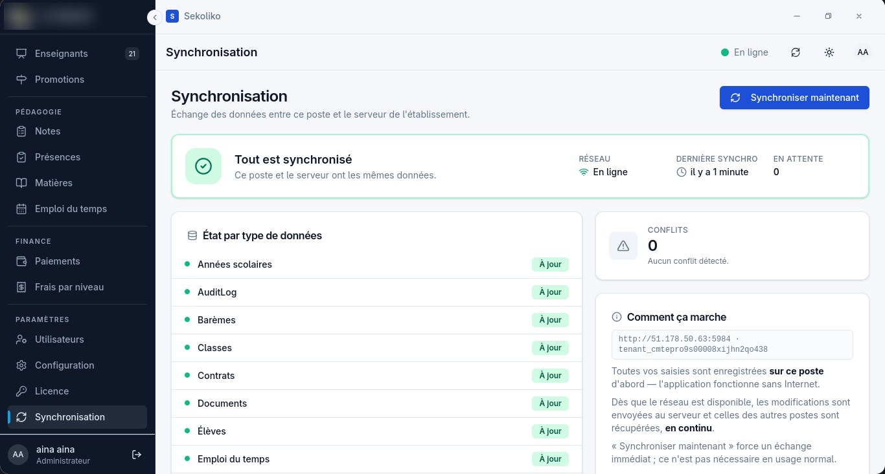
Paramètres › Synchronisation indique si le poste est en ligne, la date du dernier échange, le nombre de modifications en attente d'envoi, et l'état de chaque type de données. Synchroniser maintenant force un échange immédiat — ce n'est pas nécessaire en usage normal.
Le secrétariat peut encaisser pendant que la direction consulte les notes : chaque poste travaille de son côté. Si la même fiche est modifiée sur deux postes pendant une coupure, Sekoliko retient la modification la plus récente au retour du réseau.
Connectez chaque poste à Internet au moins une fois par jour : c'est ce qui met les postes d'accord entre eux et sauvegarde vos données sur le serveur.
Paramètres › Licence
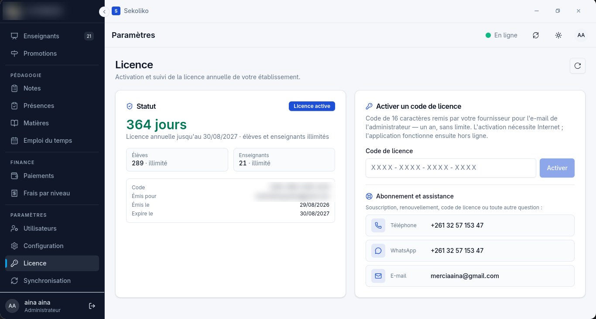
À la création, l'établissement dispose de 14 jours d'essai gratuit, avec tous les modules, jusqu'à 200 élèves et 30 enseignants.
La licence est annuelle, sans limite d'élèves ni d'enseignants, valable sur tous les postes de l'établissement. Sa date d'échéance est affichée sur la page.
Sans licence valide, Sekoliko passe en lecture seule : tout reste consultable, exportable et imprimable, mais plus rien ne peut être créé ni modifié. Un bandeau rouge l'indique. Rien n'est jamais supprimé : tout redevient modifiable dès l'activation d'un nouveau code.
Les réponses aux questions qu'on nous pose le plus.
L'essai ou la licence a probablement expiré : le logiciel est en lecture seule. Vérifiez Paramètres › Licence (chapitre 19).
Oui : sur l'écran verrouillé, Se connecter avec un autre compte. Sans Internet, il faut qu'il se soit déjà connecté une fois en ligne sur ce poste.
Connectez-vous une fois en ligne sur chacun d'eux : ils retiendront le nouveau mot de passe pour le déverrouillage hors ligne.
Un ordinateur ne peut créer qu'un seul établissement. Pour en ouvrir un autre, contactez-nous.
Une adresse e-mail ne sert qu'à un seul compte. Utilisez une autre adresse pour ce collègue, ou vérifiez qu'il n'a pas déjà un compte.
Vérifiez sa fiche : sa classe est-elle bien renseignée, et son statut Actif ? Vérifiez aussi le filtre de classe de la liste.
Ils doivent être créés dans École › Niveaux : c'est la seule liste de référence du logiciel.
Vérifiez que les deux postes sont En ligne (en haut à droite), puis ouvrez Paramètres › Synchronisation et cliquez sur Synchroniser maintenant.
C'est normal pour l'instant : cliquez sur Informations complémentaires, puis Exécuter quand même (chapitre 2).
L'équipe qui écrit le logiciel est celle qui décroche. Pas de ticket, pas de file d'attente.
+261 32 57 153 47
+261 32 57 153 47
merciaaina@gmail.com
Sur WhatsApp, une photo de l'écran qui vous pose problème nous fait souvent gagner beaucoup de temps.
Sekoliko · Manuel d'utilisation du logiciel · version 1.0.2 · Le téléchargement et la documentation sont disponibles sur sekoliko.netlify.app.